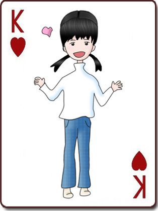

《雨霖铃》词一篇

文章目录
ziyunch 发表于 2008-04-11 16:48:00 @ Ycool
某日——上周日貌似是——听到外面有雨声，貌似很大，又感才思退却，处世艰难，顺手敷成半片雨霖铃：
危空无月，错将明焰，当了星落。寒鸦翅断新树，樱花落尽，凄凉心幕。黯然埋身，纵自诩八斗才哲。总虚设，空溅窗檐，抖遍斜风雨急作。
自我感觉写得还好，就是韵用得太宽。然后去洗个澡，朝窗外仔细一看，外面一点雨啊米有，顿时后片就没兴致写下去了，草草完事。
如斯逝者凭谁噎。气填膺，才把欢娱辍。平平竟说春恶，闲散发，叹人情拙。几许愁思，更乱添怀，柳系重结。妄寂寞，漫写风云，何处苍天廓？
先塞上来吧~
还有两幅画
上面是我把头发改过的图

上面是前百上的前百……
很明显我的边不是一般的粗糙啊~~
阅读 182次 评论 10条
| 评论 | | |
| - | – | —– |
|海苔鼠 |2008-04-11 17:34:54 |不是一个等级上的阿，千大仍需多多努力 |猫|2008-04-11 17:35:04 |事先声名,那什么的,脖子和腿那么畸形是因为某千的技术好~(啊啊!!!!我的脚不是一长一短的!!!)话说你头发的纹理真整齐啊~(右边的方向明显不对嘛!可以用液化弄一下~)
|猫|2008-04-11 17:35:04 |事先声名,那什么的,脖子和腿那么畸形是因为某千的技术好~(啊啊!!!!我的脚不是一长一短的!!!)话说你头发的纹理真整齐啊~(右边的方向明显不对嘛!可以用液化弄一下~) |猫|2008-04-11 17:38:47 |虫~我们果然心有灵犀啊~评论的时间都那么的相似~
|猫|2008-04-11 17:39:13 |来,么个~
|雪菱漪痕|2008-04-11 18:22:10 |韵用得那么宽干吗…读着怪怪的…
|猫|2008-04-11 17:38:47 |虫~我们果然心有灵犀啊~评论的时间都那么的相似~
|猫|2008-04-11 17:39:13 |来,么个~
|雪菱漪痕|2008-04-11 18:22:10 |韵用得那么宽干吗…读着怪怪的… 当然，千大的才华我望尘莫及啊…
当然，千大的才华我望尘莫及啊… |雪菱漪痕|2008-04-11 18:24:44|看不出来哪里改过了…为什么你脸上的胭脂（还是肉肉）掉了出来…莫非是千大捏脸的后果？？
|雪菱漪痕|2008-04-11 18:26:23 |和你说了多少遍
|雪菱漪痕|2008-04-11 18:24:44|看不出来哪里改过了…为什么你脸上的胭脂（还是肉肉）掉了出来…莫非是千大捏脸的后果？？
|雪菱漪痕|2008-04-11 18:26:23 |和你说了多少遍 头发不要画成唐朝的帽子形…看着真的很别扭的说…
|vivian|2008-04-12 12:51:12 |没的说
|❤Lacyya|2008-04-13 17:55:48|文人啊文人啊~~
|||（应该谦虚点）哎……最近作文都憋不出来啊
|❤Lacyya|2008-04-13 17:57:01|和你说了多少遍 头发不要画成唐朝的帽子形…看着真的很别扭的说… 哈哈哈哈… 唐朝的帽子形… 笑死我了… 经典的比喻啊~
|||哈哈，那人原来就是唐朝帽子型啊~~~（她的身材也如此）
头发不要画成唐朝的帽子形…看着真的很别扭的说…
|vivian|2008-04-12 12:51:12 |没的说
|❤Lacyya|2008-04-13 17:55:48|文人啊文人啊~~
|||（应该谦虚点）哎……最近作文都憋不出来啊
|❤Lacyya|2008-04-13 17:57:01|和你说了多少遍 头发不要画成唐朝的帽子形…看着真的很别扭的说… 哈哈哈哈… 唐朝的帽子形… 笑死我了… 经典的比喻啊~
|||哈哈，那人原来就是唐朝帽子型啊~~~（她的身材也如此）
文章作者 ziyunch
上次更新 2008-04-11